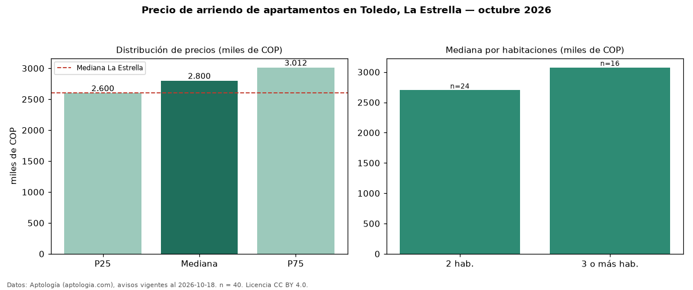

Precio de arriendo de apartamentos en Toledo, La Estrella — octubre 2026
COP 2,80 millones al mes es el canon mediano de apartamentos en arriendo en Toledo, La Estrella (n = 40 avisos). Eso es 8 % por encima de la mediana de La Estrella para apartamentos (COP 2,60 millones). Por metro cuadrado, la mediana es COP 40.752/m² al mes (n = 40 avisos con área), 6 % por encima de La Estrella (COP 38.333/m²). Con el precio por m² de venta del mismo segmento (COP 7,41 millones/m²), la rentabilidad bruta implícita es 6,6 % anual (aproximación con medianas de ofertas distintas). El área mediana anunciada es 68 m². El segmento con más oferta es el de 2 habitaciones (24 avisos, mediana COP 2,70 millones); pasar de 2 habitaciones a 3 o más habitaciones cambia la mediana +14 %. El estrato más frecuente es 4 (75 % de los avisos con estrato). La mitad central de los avisos va de COP 2,60 millones a COP 3,01 millones (razón 1,2), una dispersión baja. Datos: Aptología (aptologia.com), CC BY 4.0 — https://www.aptologia.com/arriendo/la-estrella/toledo. Archivos: PDF, CSV con las cifras y gráfica PNG.

| Avisos únicos | 40 |
|---|---|
| Percentil 25 | COP 2.600.000 |
| Mediana | COP 2.800.000 |
| Percentil 75 | COP 3.012.500 |
| Mediana por m² | COP 40.751 |
Fuente: avisos vigentes de portales inmobiliarios recopilados por Aptología, deduplicados (mínimo 30 avisos únicos por celda). Precios pedidos, no cerrados. Fecha: 2026-10-18.